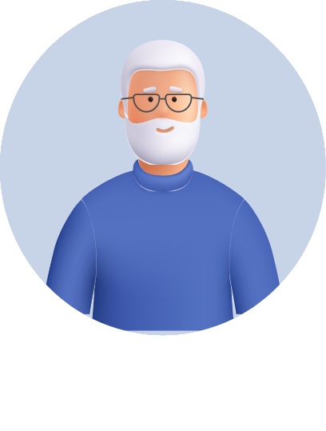

-
אני מבוגר/ת
הגעת לאתר הדרכה של האירדוק, מכשיר שעוזר בהקלה על כאבים באוזניים. כאן אפשר למצוא מידע מקיף על האירדוק שמותאם במיוחד בשבילך. ניתן להשתמש מגיל 10 ומעלה.
- 
-
מצב זה גורם לתחושת רעשים באוזניים, כמו צלצולים או זמזום. טינטון יכול להיגרם על ידי חשיפה לרעשים חזקים, אובדן שמיעה, שימוש מסוים בתרופות, או מצבים רפואיים אחרים
-
דלקת זו פוגעת בתעלת האוזן החיצונית, הנקראת גם תעלת השמע. התסמינים כוללים כאב, אדמומיות, נפיחות, הפרשות מהאוזן, וירידה בשמיעה.
-
דלקת זו פוגעת באוזן התיכונה, חלל קטן מאחורי עור התוף. גורמים: חיידקיים, נגיפיים ואלרגיים. התסמינים כוללים כאב אוזניים, התכווצות אוזניים, ירידה בשמיעה, הפרשות מהאוזן, וסחרחורת
תכירו את האירדוק
תוכלו לסובב את המכשיר וללחוץ על הנקודות השונות כדי להכיר את מבנה האירדוק